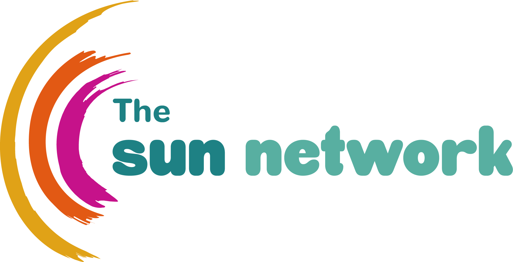

1
Tailored partner route
SUN Network
Co-production, lived-experience language, participant framing and evaluation support.

30–45m
Scoping conversation
0
Clinical records replaced
TBC
Support note
What we need from this partner
Keep the system honest.
Keep the system honest.
Shape the language and the meaning.
Co-design language and measures
Co-design language, measures, and what “good” looks like.
Interpret what the system is really showing
Review outputs and help interpret what the system is really showing.
Run the loop
Run a practical “what we heard / what we changed” loop.
We know your time matters. The ask now is deliberately small because the future system should reduce burden later.
Where this route fits
Co-production and evaluation.
Co-production and evaluation.
Not performance theatre.
A referral is a signpost. A hand-off receipt is a connection.
Lived-experience framing
Reporting is only useful if it reflects lived experience and is interpreted responsibly.
Co-designed reporting
Co-design keeps the reporting honest. It stops dashboards becoming performance theatre.
Shared language across partners
Continuity works better when the language, measures and interpretation are shaped with the people and services who will actually use them.
What this is not asking
Keep the boundaries clear.
Keep the boundaries clear.
Keep the burden low.
Guardrails
- No new clinical record to maintain.
- No diagnosis, prescribing or clinical decision-making by OTOS.
- No EPR write-back.
- No commitment to a full rollout by giving feedback.
Questions to resolve
- Who needs to be involved?
- What touchpoints are realistic?
- What time and effort is acceptable?
- What support wording would be comfortable?